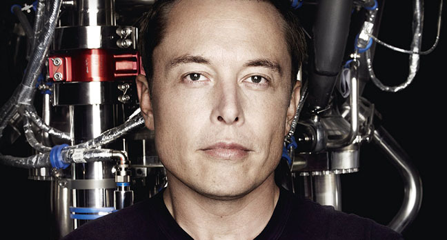

Elon Reeve Musk

The CEO of SpaceX and Tesla, who is considered the architect of the future.
Here's a time line for Musk's achievements:
- 1971 - Born in South Africa from an engineer father and a model mother
- 1983 - Creates and writes a video game called Blastar; sells it for the equivalent of $500
- 1989/1991 - Completed a BS in Economics (Wharton) and a BA with a major in physics at the university of Pennsylvania
- 1999 - Sells Zip2 to Compaq, the personal computer company, for $307 million, of which $22 million went to Musk. Then forms X.com, which in 2000 morphs into PayPal
- 2002 - eBay acquires PayPal for $1.5 billion in stock, of which $165 million goes to Musk. Becomes an American citizen. Founds SpaceX9
- 2004 - Invest in Tesla
- 2008 - Becomes Tesla’s CEO
- 2012 - SpaceX becomes the first commercial vehicle to deliver a load of supplies to the International Space Station. Tesla begins deliveries of the all-electric Model S
- 2013 - Releases sketch and concept of the Hyperloop
"When something is important enough,
you do it even if the odds are not in your favor"
If you want to know more about this man, go to his Wikipedia entry